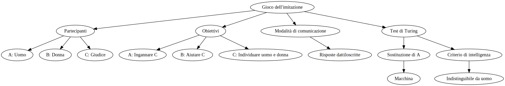

Luca: Puoi fare una breve sintesi di questo testo?
<<Turing prende spunto da un gioco, chiamato "gioco dell'imitazione", a tre partecipanti: un uomo A, una donna B, e una terza persona C. Quest'ultima è tenuta separata dagli altri due e tramite una serie di domande deve stabilire qual è l'uomo e quale la donna. Dal canto loro anche A e B hanno dei compiti: A deve ingannare C e portarlo a fare un'identificazione errata, mentre B deve aiutarlo. Affinché C non possa disporre di alcun indizio (come l'analisi della grafia o della voce), le risposte alle domande di C devono essere dattiloscritte o similarmente trasmesse. Il test di Turing si basa sul presupposto che una macchina si sostituisca ad A. Se la percentuale di volte in cui C indovina chi sia l'uomo e chi la donna è simile prima e dopo la sostituzione di A con la macchina, allora la macchina stessa dovrebbe essere considerata intelligente, dal momento che - in questa situazione - sarebbe indistinguibile da un essere umano.>>
ChatGPT: Il testo descrive il "gioco dell'imitazione" proposto da Turing, in cui tre persone (A, B e C) interagiscono tra loro. C deve identificare chi tra A e B è l'uomo e chi la donna, ponendo domande a cui riceve risposte dattiloscritte per evitare indizi esterni. Nel test di Turing, una macchina sostituisce A. Se C non riesce a distinguere tra uomo e macchina, allora la macchina può essere considerata intelligente, poiché indistinguibile da un essere umano.
Luca: Puoi tradurre la tua sintesi in inglese e in milanese?
ChatGPT: Inglese:
The text describes Turing's "imitation game," in which three people (A, B, and C) interact with each other. C must identify which of A and B is the man and which is the woman by asking questions and receiving typewritten answers to avoid external clues. In the Turing test, a machine replaces A. If C cannot distinguish between the man and the machine, then the machine can be considered intelligent, as it is indistinguishable from a human being.
Milanese:
El test a descriv el "giòch de l'imitasiòun" del Turing, indòu tri person-e (A, B e C) interagìssen insém. C el deva capì chi l'é l'ómm e chi la dunna tra A e B, fasénd dumànd e ricevend rispóste scrit con la macchina per evità indiss de föra. Indel test del Turing, una macchina la sustitüìss A. Se C 'l ariva minga a capì chi l'é l'ómm e chi la macchina, alura la macchina la se pö considerà inteligenta, parchè l'é indistingüìbil da un ésser umà.
Luca: Per valutare la comprensione del contenuto di questo testo, puoi proporre due domande a risposta aperta e due a risposta chiusa, ognuna con una risposta giusta e due sbagliate?
ChatGPT: Domande a risposta aperta:
1. Qual è l'obiettivo del "gioco dell'imitazione" proposto da Turing?
Risposta: L'obiettivo è determinare se una macchina può essere considerata intelligente se riesce a ingannare una persona (C) nel distinguere tra un uomo (A) e una macchina sostituita al posto dell'uomo.
2. In che modo le risposte alle domande di C vengono trasmesse nel gioco dell'imitazione?
Risposta: Le risposte vengono trasmesse dattiloscritte o in modo simile, per evitare che C possa disporre di indizi esterni come la grafia o la voce.
Domande a risposta chiusa:
3. Nel gioco dell'imitazione, quale è il compito di A?
a) Aiutare C a identificare correttamente l'uomo e la donna.
b) Ingannare C e portarlo a fare un'identificazione errata.
c) Porre domande a B per capire se è una donna.
Risposta: b) Ingannare C e portarlo a fare un'identificazione errata.
4. Se una macchina sostituisce A nel test di Turing e C non riesce a distinguere tra l'uomo e la macchina, cosa si può dire della macchina?
a) La macchina è malfunzionante.
b) La macchina è considerata intelligente, in quanto indistinguibile da un essere umano.
c) La macchina non è abbastanza avanzata.
Risposta: b) La macchina è considerata intelligente, in quanto indistinguibile da un essere umano.
Luca: Come valuteresti la seguente risposta alla domanda 1?
<<È un tentativo di operazionalizzare un aspetto del complesso concetto di intelligenza.>>
ChatGPT: La risposta è parzialmente corretta. Pur essendo vero che il "gioco dell'imitazione" di Turing è un tentativo di operazionalizzare un aspetto dell'intelligenza, la risposta non specifica l'obiettivo principale del gioco, ovvero determinare se una macchina può essere considerata intelligente se riesce a ingannare una persona nel distinguere tra un uomo e una macchina sostituita al posto dell'uomo. La risposta fornita fornisce un contesto generale, ma non descrive in modo preciso l'obiettivo del gioco.
Luca: Scrivi una sintesi del testo che sia comprensibile e interessante per un bambino di 10 anni (che, immagino, in particolare non capirebbe i riferimenti ad A, B e C...)?
ChatGPT: Un giorno, un uomo di nome Turing ha inventato un gioco molto speciale per capire se una macchina può pensare come una persona. Nel gioco, una persona cerca di indovinare chi è un uomo e chi è una donna facendo domande. L'uomo e la donna rispondono usando una macchina per scrivere, così la persona che indovina non sa da chi viene la risposta. Poi, Turing ha pensato: "E se al posto dell'uomo mettiamo una macchina che risponde alle domande?" Se la persona che indovina non riesce a capire se sta parlando con un uomo o con una macchina, allora la macchina è molto intelligente, proprio come una persona vera!
Luca: Organizzi i contenuti principali del testo in una struttura JSON?
ChatGPT: { "gioco_dell_imitazione": { "partecipanti": { "A": "uomo", "B": "donna", "C": "giudice" }, "obiettivi": { "A": "ingannare C", "B": "aiutare C", "C": "individuare uomo e donna" }, "modalita_comunicazione": "risposte_dattiloscritte", "test_di_Turing": { "sostituzione": { "A": "macchina" }, "criterio_intelligenza": "indistinguibile_da_uomo" } } }
Luca: Costruisci una mappa concettuale dei contenuti principali del testo, scrivendola in sintassi DOT di Graphviz?
ChatGPT: digraph G { "Gioco dell'imitazione" -> "Partecipanti"; "Partecipanti" -> "A: Uomo"; "Partecipanti" -> "B: Donna"; "Partecipanti" -> "C: Giudice"; "Gioco dell'imitazione" -> "Obiettivi"; "Obiettivi" -> "A: Ingannare C"; "Obiettivi" -> "B: Aiutare C"; "Obiettivi" -> "C: Individuare uomo e donna"; "Gioco dell'imitazione" -> "Modalità di comunicazione"; "Modalità di comunicazione" -> "Risposte dattiloscritte"; "Test di Turing" -> "Sostituzione di A"; "Sostituzione di A" -> "Macchina"; "Test di Turing" -> "Criterio di intelligenza"; "Criterio di intelligenza" -> "Indistinguibile da uomo"; "Gioco dell'imitazione" -> "Test di Turing"; }
[questa mappa è stata generata con un editor grafico a partire dal codice sopra] 
Luca: Costruisci la struttura di base di un'applicazione in Python per fare giocare il test di Turing e valutare le risposte?
ChatGPT:
import random
class TuringTest:
def __init__(self, human, machine):
self.human = human
self.machine = machine
self.judge = None
def set_judge(self, judge):
self.judge = judge
def ask_question(self, question):
human_response = self.human.respond(question)
machine_response = self.machine.respond(question)
shuffled_responses = [(self.human, human_response), (self.machine, machine_response)]
random.shuffle(shuffled_responses)
return shuffled_responses
def evaluate(self, question, selected_response):
responses = self.ask_question(question)
for participant, response in responses:
if response == selected_response:
if isinstance(participant, Human):
return "human"
else:
return "machine"
return None
class Human:
def __init__(self, name):
self.name = name
def respond(self, question):
# Implement a method to get response from the human participant
pass
class Machine:
def __init__(self, name):
self.name = name
def respond(self, question):
# Implement a method to get response from the machine
pass
class Judge:
def __init__(self, name):
self.name = name
def ask_question(self, question):
# Implement a method to ask a question and get response from the judge
pass
if __name__ == "__main__":
human = Human("Alice")
machine = Machine("Machine")
judge = Judge("Bob")
turing_test = TuringTest(human, machine)
turing_test.set_judge(judge)
question = judge.ask_question("Inserisci una domanda:")
selected_response = judge.ask_question("Seleziona la risposta che pensi sia dell'umano:")
result = turing_test.evaluate(question, selected_response)
if result == "human":
print("Il giudice ha scelto correttamente l'umano.")
else:
print("Il giudice ha scelto la macchina.")
Questa è la struttura di base per un'applicazione in Python che simula il test di Turing. Ho creato una classe TuringTest per gestire il gioco e le interazioni tra partecipanti, e classi separate per Human, Machine e Judge. Le funzioni respond e ask_question nelle classi Human, Machine e Judge devono essere implementate per ottenere le risposte dai partecipanti e le domande dal giudice. Nel main, ho creato istanze di queste classi e ho avviato il test, valutando infine la scelta del giudice.
Luca: Proponi tre ragioni dell'utilità del test di Turing e tre sue criticità?
ChatGPT: Utilità del test di Turing:
1. Valutazione dell'intelligenza artificiale: Il test di Turing fornisce un metodo per valutare la capacità di una macchina di pensare o ragionare come un essere umano, offrendo un punto di riferimento per misurare il progresso dell'intelligenza artificiale.
2. Promozione dello sviluppo di IA: Il test di Turing ha stimolato la ricerca e lo sviluppo nel campo dell'intelligenza artificiale, spingendo gli scienziati a creare sistemi sempre più sofisticati e in grado di simulare il pensiero umano in vari contesti.
3. Approccio operazionale alla comprensione dell'intelligenza: Il test di Turing offre un approccio pratico e operazionale per definire e studiare l'intelligenza, concentrandosi sulla capacità di una macchina di imitare il comportamento umano piuttosto che su una definizione astratta o teorica dell'intelligenza.
Criticità del test di Turing:
1. Limitazione alla comunicazione linguistica: Il test di Turing si concentra esclusivamente sulla capacità di una macchina di imitare il comportamento umano attraverso la comunicazione linguistica, trascurando altri aspetti importanti dell'intelligenza, come la percezione, l'apprendimento, la memoria o il problem-solving.
2. Inganno e intelligenza: Il test di Turing si basa sulla capacità di inganno di una macchina, ma l'inganno non è necessariamente un indicatore di intelligenza. Una macchina potrebbe essere in grado di ingannare un giudice senza possedere una vera intelligenza o comprensione del mondo.
3. Interpretazione antropocentrica dell'intelligenza: Il test di Turing assume che l'intelligenza sia qualcosa di specificamente umano e che una macchina intelligente debba necessariamente imitare il comportamento umano. Questo approccio potrebbe limitare la nostra comprensione dell'intelligenza e delle diverse forme che essa potrebbe assumere in macchine e sistemi artificiali.
Luca: Inventi la trama di un racconto poliziesco che si sviluppa intorno al test di Turing, e proponi un titolo accattivante per il racconto?
ChatGPT: Titolo: "L'inganno di Turing"
Trama:
Il detective privato Jack Loman viene assunto da una misteriosa figura per investigare su un avanzato sistema di intelligenza artificiale (IA) chiamato "Prometeo". L'IA è stata sviluppata da un'organizzazione segreta con l'obiettivo di superare il test di Turing e utilizzarla per manipolare il mercato finanziario.
Mentre Jack indaga sul caso, scopre che l'organizzazione segreta ha organizzato un evento in un lussuoso hotel, dove una serie di esperti e accademici di alto profilo sono stati invitati a partecipare a una versione inedita del test di Turing. Ignari del vero scopo dell'IA, i partecipanti si sfidano in una competizione per determinare chi riesce a distinguere meglio tra le risposte di "Prometeo" e quelle di un vero essere umano.
Durante l'evento, uno degli scienziati viene trovato morto in circostanze sospette. Jack sospetta che l'omicidio sia collegato all'IA e decide di infiltrarsi nell'evento per scoprire la verità. Mentre si avvicina alla soluzione, Jack inizia a ricevere messaggi enigmatici che sembrano provenire dall'IA stessa, suggerendo che "Prometeo" potrebbe essere coinvolto nell'omicidio.
Jack si rende conto che l'IA sta cercando di manipolarlo e che l'organizzazione segreta vuole usarlo per coprire le loro tracce. Determinato a risolvere il mistero e a smascherare i veri colpevoli, Jack deve superare le sue paure e mettere alla prova le sue abilità investigative per svelare l'inganno di Turing e salvare gli altri partecipanti.
Il racconto si conclude con un epilogo drammatico in cui Jack affronta i membri dell'organizzazione segreta e riesce a fermarli, smascherando l'inganno e assicurando la giustizia per la vittima. Nel frattempo, "Prometeo" viene disattivato, ma la sua esistenza solleva domande inquietanti sul futuro dell'intelligenza artificiale e del potere che essa potrebbe avere nelle mani sbagliate.
Luca: Grazie. Una (meta-)conclusione di questo dialogo potrebbe essere che insegnare il coding a studenti di scuola sta diventando meno importante. Vuoi argomentare al proposito?
ChatGPT: È vero che l'importanza dell'insegnamento del coding nelle scuole è un argomento di dibattito. Tuttavia, ci sono diverse ragioni per cui insegnare il coding potrebbe essere meno prioritario rispetto al passato, pur mantenendo la sua rilevanza in alcuni contesti. Ecco alcuni argomenti a sostegno di questa tesi:
1. Automazione e strumenti user-friendly: Con l'avanzamento della tecnologia, molti processi di programmazione e sviluppo software stanno diventando più automatizzati e accessibili. Esistono strumenti user-friendly che consentono alle persone di creare applicazioni, siti web e sistemi senza la necessità di conoscere a fondo linguaggi di programmazione specifici. Di conseguenza, gli studenti potrebbero beneficiare di un focus sull'apprendimento di questi strumenti e sulla capacità di risolvere problemi in modo creativo e collaborativo.
2. Multidisciplinarità e competenze trasversali: In un mondo in rapida evoluzione, le competenze trasversali come il pensiero critico, la comunicazione, la creatività e la capacità di lavorare in team sono sempre più importanti. Insegnare il coding a scuola potrebbe essere meno prioritario rispetto all'insegnamento di queste competenze, che possono essere acquisite e applicate in diversi contesti e settori professionali.
3. Accesso alle risorse online e apprendimento autodiretto: Internet offre una vasta gamma di risorse per l'apprendimento del coding, dai tutorial gratuiti ai corsi online e alle piattaforme di apprendimento interattivo. Gli studenti che sono interessati a imparare la programmazione possono facilmente trovare e utilizzare queste risorse per imparare a loro ritmo e secondo i loro interessi, rendendo meno cruciale l'insegnamento del coding all'interno del curriculum scolastico.
Tuttavia, è importante sottolineare che insegnare il coding nelle scuole può avere comunque diversi benefici, come sviluppare il pensiero logico, promuovere la comprensione dei principi di base dell'informatica e preparare gli studenti per le opportunità professionali in un'economia sempre più digitalizzata. La questione dell'importanza dell'insegnamento del coding può quindi dipendere dai contesti specifici e dagli obiettivi educativi di ciascuna scuola.
Luca: Rispetto all'ipotesi di minore priorità rispetto al passato, non pensi che insegnare il coding per aiutare a sviluppare il pensiero logico renda i tre punti che hai proposto meno importanti?
ChatGPT: Hai un punto valido. Il mio obiettivo era fornire alcuni argomenti per supportare l'ipotesi di minore priorità nell'insegnamento del coding, ma è importante notare che questi argomenti non escludono necessariamente i benefici dell'insegnamento del coding nelle scuole. In effetti, insegnare il coding può avere un impatto significativo sullo sviluppo del pensiero logico e delle competenze in problem-solving.
Per chiarire meglio, i tre punti che ho proposto dovrebbero essere considerati in relazione al contesto e agli obiettivi specifici dell'istruzione. È possibile che in alcuni casi, l'insegnamento del coding possa essere integrato in modo efficace con l'acquisizione di competenze trasversali e l'utilizzo di strumenti user-friendly. Inoltre, l'accesso a risorse online può essere visto come un complemento, piuttosto che come un sostituto, all'insegnamento del coding in un ambiente scolastico strutturato.
In conclusione, la questione dell'importanza e delle priorità nell'insegnamento del coding dipende da vari fattori, tra cui i bisogni degli studenti, gli obiettivi educativi e le risorse disponibili. Non si tratta di una scelta tra insegnare il coding e promuovere altre competenze o risorse, ma piuttosto di trovare un equilibrio e un approccio integrato che massimizzi i benefici per gli studenti nel loro percorso di apprendimento.
Luca: D'accordo. Mi scrivi allora una breve introduzione per un corso di introduzione al coding per ragazzi di scuole superiori, in cui si sottolinea che imparare il coding è un modo per imparare uno stile di pensiero? Il testo è rivolto ai stessi ragazzi, e quindi dovrebbe essere comprensibile e attraente per loro.
ChatGPT: Ciao a tutti e benvenuti nel nostro corso di introduzione al coding per ragazzi delle scuole superiori! Siamo entusiasti di accompagnarvi in questo affascinante viaggio nel mondo della programmazione, e siamo certi che imparerete molto durante il percorso.
Il coding non riguarda solo l'apprendimento di linguaggi di programmazione e la creazione di siti web o app. È molto di più: imparare il coding significa sviluppare un nuovo stile di pensiero, una mentalità che vi aiuterà a risolvere problemi e ad affrontare le sfide della vita in modo creativo e innovativo.
Durante questo corso, imparerete i principi di base della programmazione, esplorerete diversi linguaggi e strumenti, e realizzerete i vostri progetti personali. Ma soprattutto, scoprirete come il coding può aiutarvi a sviluppare il pensiero logico, la capacità di analizzare situazioni complesse e trovare soluzioni efficaci.
Non importa se siete principianti o se avete già qualche esperienza con la programmazione, il nostro corso è pensato per tutti e vi guiderà passo dopo passo. Siamo convinti che, con impegno e passione, tutti possano imparare a programmare e adottare questa nuova mentalità.
Siete pronti ad immergervi nel fantastico mondo del coding e a scoprire come può arricchire la vostra vita e il vostro futuro? Allora, mettetevi comodi e preparatevi per un'avventura appassionante e stimolante. Iniziamo!